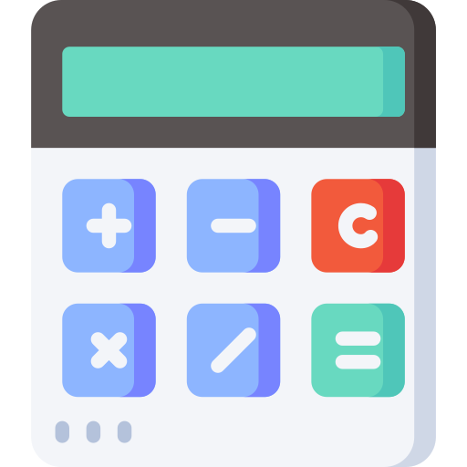
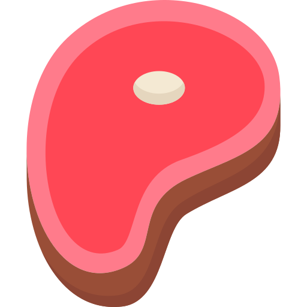
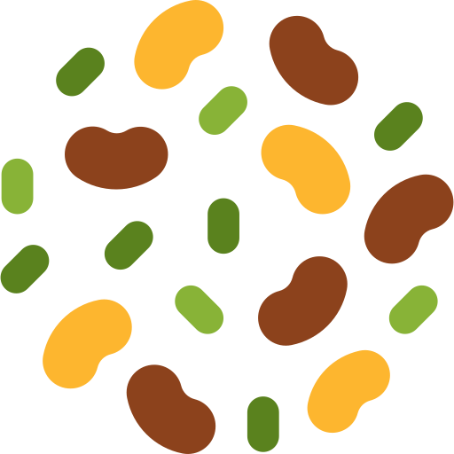

¿Sabias que según la OMS (organización mundial de la salud) la mayoría de la población consume mucho menos de la proteína que su cuerpo necesita?
¿Por qué es importante calcular la proteína que consumo?
Es el macronutriente más importante
Expertos aseguran que puedes construir tu plato basado en la cantidad de proteína que debes consumir, incluso si un día no comieras grasas y carbohidratos tu cuerpo no los extrañaría tanto como la proteina.
Todo extremo es malo
Tanto el exceso como la falta de proteina se podrían convertir en un grave problema para tu salud.
No todos necesitamos lo mismo
Dependiendo variables como tu peso, edad y algunas otras condiciones tus requerimientos protéicos serán diferentes, eso es precisamente lo que te ayudaremos a calcular.
Pero antes, me gustaría que vieras más información acerca de la importancia de consumir la proteína adecuada, en este video realizado por un experto en el tema...
Calculemos...

Te haremos algunas preguntas, contestalas todas hasta el final para poder calcular cuanta proteína necesitas.
¿Eres una mujer que actualmente está embarazada o lactando?
¿Cual es tu edad?
O la edad de la persona que quieres calcular...
Años
¿Haces ejercicio?
¿Cual es tu peso?
Nota: Para que este cálculo funcione debes escribir tu peso ideal, si te encuentras en sobrepeso, obesidad o muy bajo de peso, no escribas acá lo que pesas en este momento, sino el peso que idealmente deberías tener.
Kilogramos
Tu resultado
¿Cómo puedo consumir esos gramos?
A continuación te damos algunas ideas de alimentos y la cantidad de proteína que contienen, para que asi cuentes y calcules según tus requerimientos de proteína al día.

Carnes
En promedio la cuarta parte de su peso cocido, es proteína.

Granos
Una taza de granos como el frijol o la lenteja contiene aproximadamente unos 8 gramos de proteína.
Huevos
Los huevos son un alimento increíble, a parte de contener grasas buenas para el cuerpo, cada huevo aporta alrededor de 6.5 gramos de proteína.
Almendras
Las almendras y otras nueces se componen en su mayoría de grasas saludables, pero un puñado de ellas contiene 3 gramos de proteína.
Champiñones
Una taza de champiñones contiene 5 gramos de proteína.
Brócoli
Una taza de brócoli contiene 3 gramos de proteína.